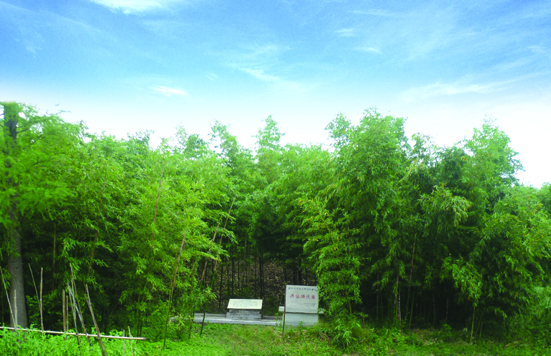

洪合项氏墓
嘉兴市文物保护网 · 市级文物保护单位 · 2014-06-16 · 原文

洪合项氏墓位于嘉兴市秀洲区洪合镇良三村6组，是明代著名鉴藏家项元汴的家族墓地，墓呈矩形，南北长约60米，东西长约40米，面积3064平方米，墓高出地面约2米。项元汴（1524～1590），字子京，号墨林，浙江嘉兴人。明国子生，精鉴赏，家资富饶，广收法书名画，储藏之丰，甲于江南，“极一时之盛”。据清光绪《嘉兴府志》记载，“项元汴之墓，在陡门桥南寒字圩”。1975年，嘉兴博物馆对此墓进行过抢救性发掘，从出土器物判定此处为明朝项元汴家族的墓地。项氏家族是嘉兴的名门望族，项元汴更是明代著名的书画家和收藏家，其收藏品今虽已散失，但许多历代佳品，经其鉴藏方存留至今。项氏墓曾出土大量精美文物，作为项元汴家族的墓地，不仅为研究当时当地的葬俗提供了实物资料，也对纪念和研究项元汴有重要意义，因而有较高的历史、科学和艺术价值。2009年公布为嘉兴市级文物保护单位。